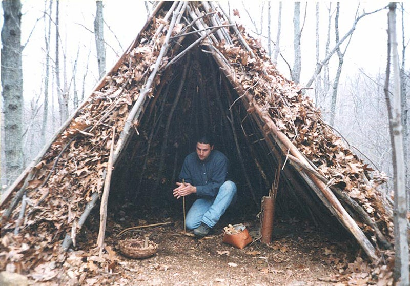

Wicki-Up
The wicki-up is a bit like a small tipi made from poles, brush and vegetation. This shelter can be found across the globe, but has been most frequently documented in the American Southwest. Thicker brush, grass, and leaf coverings along with a steeper roof can make this shelter suitable for climates with occasional rain. A broader, squattier structure covered with light brush can give you a shady, ventilated shelter for hot, dry climates.
Collect several dozen poles, some with forks at the top. Lock a few of these forks together to build a freestanding tripod. Then lay the other poles around to create the tipi frame. Finish with the vegetation layer. If the wicki-up is large enough, and the vegetation covering the roof is wet or green material, it may be safe enough to risk lighting a tiny fire inside.